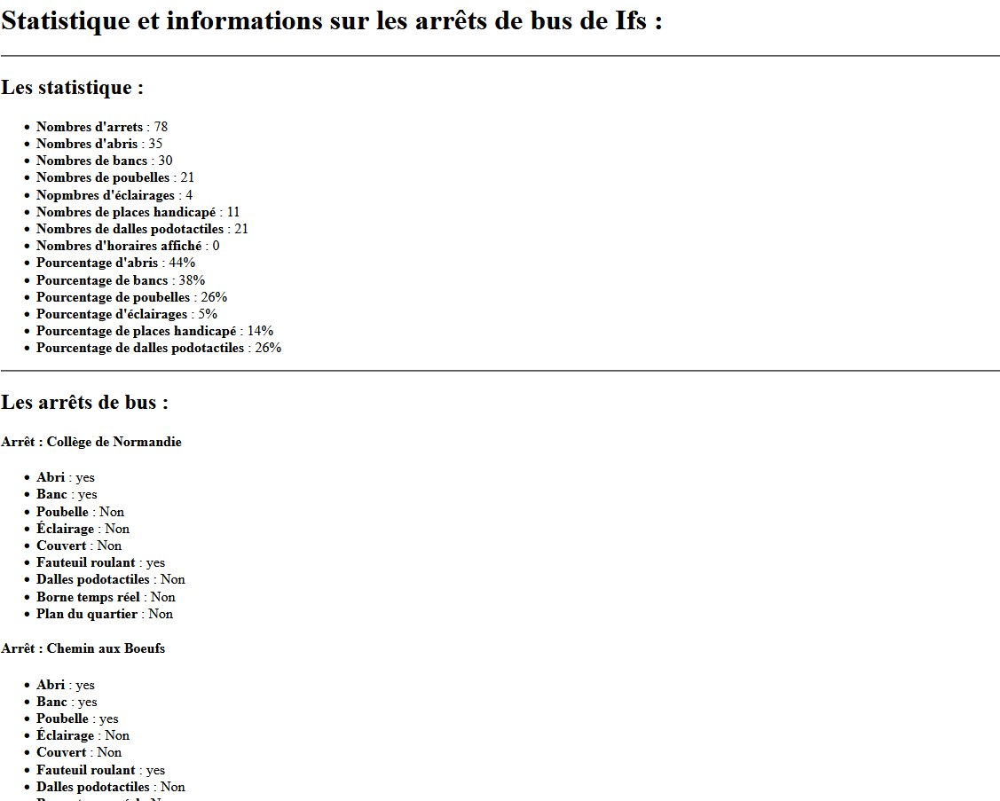
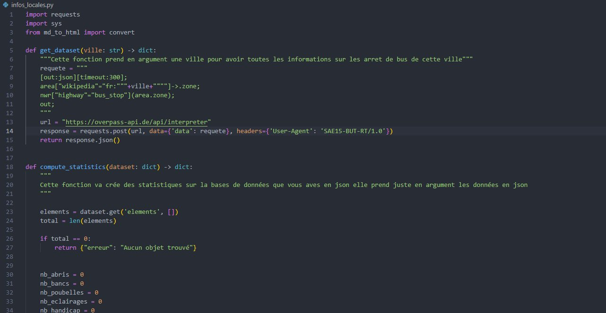

Le but de cette SAÉ était de créer des outils en Python pour récupérer, traiter et présenter des données issues de la base OpenStreetMap. Le projet se découpait en deux parties : d'abord un script fiche_osm.py qui génère une fiche HTML sur un point d'intérêt (restaurant, commerce…), puis un script infos_locales.py qui récupère tous les objets d'un certain type dans une ville et calcule des statistiques. Avec Thibaut, on a choisi de travailler sur les arrêts de bus : lister tous les arrêts d'une ville et analyser leurs équipements (abri, banc, éclairage, accessibilité…).
md_to_html.py : fonction de conversion Markdown → HTML avec la bibliothèque markdown.fiche_osm.py : requête sur l'API REST OpenStreetMap, récupération des données JSON d'un nœud, génération d'une fiche Markdown et HTML.infos_locales.py : requête Overpass QL pour récupérer tous les arrêts de bus d'une ville, calcul de statistiques (nombre et pourcentage d'arrêts avec abri, banc, poubelle, éclairage, accessibilité handicapé, dalles podotactiles, horaires affichés), et génération d'un rapport Markdown/HTML.python3 infos_locales.py Caen rapport.

v8/ ├── md_to_html.py # Conversion Markdown → HTML ├── fiche_osm.py # Fiche d'un point d'intérêt OSM └── infos_locales.py # Stats sur les arrêts de bus d'une ville
| Difficulté rencontrée | Ce que je ferais si c'était à refaire |
|---|---|
| Trouver un sujet pertinent avec assez de données et de propriétés pour faire des statistiques intéressantes. | Explorer la base OpenStreetMap plus tôt en début de projet pour repérer quels types d'objets ont des attributs exploitables, au lieu d'hésiter longtemps. |
| Projet long : beaucoup de documentation à lire (API OSM, Overpass QL, requests) et de fonctions à implémenter. | Découper le travail en étapes plus petites et se fixer des objectifs par séance pour avancer régulièrement. |
C'est la SAÉ que j'ai le plus appréciée. J'ai appris à interagir avec une API web en Python (requêtes HTTP, traitement JSON), à écrire un programme modulaire (3 fichiers qui s'importent entre eux) et à produire des résultats lisibles en Markdown et HTML. Le projet m'a aussi montré que la programmation, c'est pas juste écrire du code : c'est aussi lire de la documentation, faire des choix (quel sujet ? quelles stats ?) et structurer son travail en binôme. Je me positionne à un niveau satisfaisant : le projet fonctionne, le code est documenté et utilisable en ligne de commande.